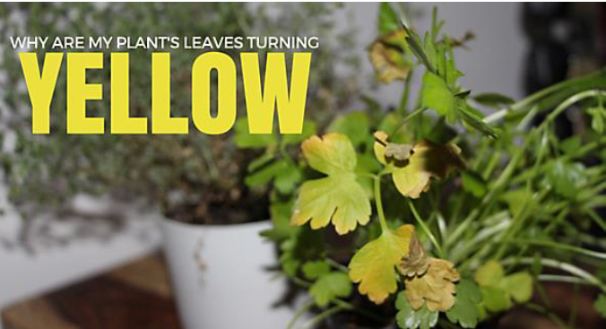
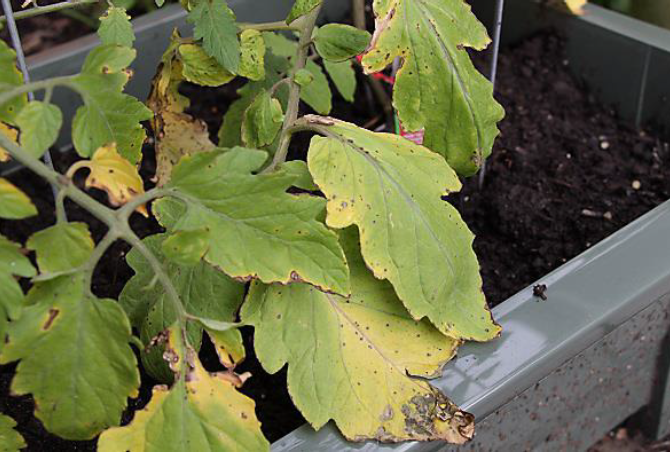

1) Waterlogged vs. Dehydration: The most typical reason your plant’s leaves turned yellow is because of water, but it’s tricky to understand whether you are over-watering or under-watering the plant. Often the leaves of plants that are under-watered will be crispy with a slight curl to the leaf while over-watered leaves will be limp. However, the plants leaves could be deceiving. You might be watering your plant enough but the water just isn’t getting to the root, which would show signs of dehydration. This often causes gardeners to waterlog their plants, harming it even more. Take action by improving soil drainage with sand or replant to a raised bed. 2) Lack of Sunlight: Since plants differ on how many hours of direct sunlight they need, lack of sunlight is another common reason leaves turn yellow. If you know you’re watering your plant correctly, it might be time to adjust the location of the plant if possible. 3) Pest Problems: If your plant’s leaves are yellow with holes or pieces of the leaf missing, you have a plant eating pest on your hands. Easily eliminate the bug without harming your plant by using neem oil or an insecticidal soap.
If you’ve knocked out the above possibilities then it’s time to take a closer look at your leaves. While it’s not mentioned on the infographic above, sometimes plants can turn yellow because of fungus or disease such as early blight or septoria leaf spot.
Plants require 13 essential minerals that they absorb through the soil. The yellow pattern on your leaves could indicate which vital nutrient your plant is missing. The nutrients plants need most are nitrogen, phosphorus and potassium.
Plants require 13 essential minerals that they absorb through the soil. The yellow pattern on your leaves could indicate which vital nutrient your plant is missing. The nutrients plants need most are nitrogen, phosphorus and potassium. Wood Ash: For an organic way to make your soil less acidic, sprinkle about 1/2″ of wood ash over your soil and mix it into the soil about a foot deep. This method takes small applications over several years, but it can be very effective, as well as a great way to recycle fireplace ashes! How to Lower the pH in Alkaline Soil Sulfur: Plain elemental sulfur (or sulphur) is probably the easiest and most common way to make soil more acidic, since it’s cheap, relatively safe, and can be spread on top of the soil. Since sulfur is pretty slow-acting, you shouldn’t apply more than 2 pounds per 100 square feet at a time. Sphagnum Peat: This is a great organic solution, since sphagnum peat also adds organic matter to your soil and increases water retention. Simply work a 2” layer of sphagnum peat into your soil at least a foot deep. Larger areas will probably require a tiller. Aluminum Sulfate and Iron Sulfate: These two products are very fast-acting, but they can also be the most damaging by adding salts and elements that can build up in the soil. Be sure not to apply more than about 5 pounds per 100 square feet. Acidifying Fertilizer: Fertilizers that contain ammonia (such as ammonium nitrate), urea, or amino acids can, over time, have an acidifying effect on the soil in your yard. Mulches and Compost: As organic matter breaks down, it tends to make soil more acidic. Regular use of organic compost and mulches will, over time, bring the soil pH closer to the desired neutral to slightly acidic level. The easiest way to lower your soil pH is just to keep heaping on the rotten stuff. Soil preparation Soil preparation is one of the most important steps to having a successful vegetable garden. The best garden soil is fertile, well drained yet retains moisture, and gets enough air circulation which is needed for healthy roots Early spring is the time to start preparing your soil. Starting with soil testing will tell you how much nitrogen, phosphorus, potassium you have in your soil and what the pH (a measure of acidity and alkalinity) is. From these results you can tell what soil amendments are needed for the best plant growth. When starting a new garden site these are the steps to follow: 1. Remove any grass. This is done if you are starting a new garden site from an existing grassy area. If you have an existing garden area start with step 2. 2. Plow, spade or rototill the area. Make sure the soil is ready to work, if it is too wet or too dry you will harm the soil structure. To test the soil take a handful and squeeze it. If it stays in a ball it is too wet. If is is powdery or has hard clumps it is too dry. If it crumbles freely it is just right. Another sign is if you are turning the soil with a spade and the soil sticks to the end of the tool it is too wet to work. If the soil is too wet wait a week and do your test again. 3. Break down any large clumps Clumps may be left after you rototill, so break these up with a hand cultivator or garden fork. 4. Apply manure or compost and soil ammendments. Add well rotted manure or compost and dig this into the top few inches of soil with a hand cultivator or rake.for the Roots area - add 1/2 - 1 inch for the Brassicas area - add 2 inches for Everything else - add 2-3 inches. Learn more about the above groups atvegetable garden layout. From your soil test find out if your soil needs any of the basic nutrients and add accordingly. 5. Add in lime Only lime the area where you will be planting your brassica group. If you have really acidic soil (pH below 5.5) you can lime the "everything else" group as well but do not lime the "root" group area. It is best to lime 1 month after you have added manure or compost to your garden soil. Use 6 lbs per 100 sq feet if clayey soil, 4 lbs per 100 sq feet if loamy soil, 2 lbs per 100 sq feet if sandy soil. 6. Rake the bed. This is done to make the bed smooth and level. Pick out any large debris or small stones. You want the soil to be the consistency of coarse breadcrumbs, especially if your are planting vegetables with fine seeds. Once your soil preparation is complete your next step in planting a vegetable garden is selecting and planting your vegetable seeds. The technique of mulching is the easiest practice that you can undertake for your garden that will produce unimaginable results. Mulch comes in two basic forms; organic and non-organic. The most frequent items used in organic mulching are grass, straw and bark. While the most frequently used items in non- organic mulching are stones, small chips of brick and even plastic. Taking the mulching task into your own hands can save you huge costs compared to having it done professionally. The materials that are required for organic mulching can be created without any cost to you so all you are really paying for is the labour to spread the mulch.